Snowflake access explorer
- Who has what: everything a person or role can reach, and everyone who can reach an object, with the role path that gives it, at any depth.
- Can they? One person or role, one privilege, one object: Yes, Partly or No, every path, where to cut it, and the nearest way in with the request text.
- What is wrong: 23 rule checks with a change plan, who reads sensitive data and whether it is masked, a review grid to sign off, granted against used, and what changed since the last snapshot.
Where the data comes from
Key: pill = actor · teal = code routine · grey DATA = tables · 2px ink border ENTRY = where viewers start · solid arrow = calls · dashed arrow = data moves · numbers = order.
- 1–3: the procedure reads grants, users, query history, tags, policies, streams and (optional) object usage with its owner's rights, then writes one run (
RUN_ID) into the snapshot tables. - The app's Rebuild snapshot button (top bar,
SOURCE=objects) runs the same CALL, still with the owner's rights.
- 5, 7: the app and the SQL functions read only the last
STATUS = 'OK'run: nobody sees half a snapshot. - Viewers need no rights on ACCOUNT_USAGE or SHOW: SELECT on the
TBL_ACCESS_tables is enough. - My access skips the snapshot: it reads the viewer's own roles live, with the viewer's rights (below).
- No procedures allowed? Direct mode skips 1–3 and the tables: the app reads the same sources itself, with your role (Run modes).
How a snapshot is built and read
Key: grey band = who acts · white = step · lavender diamond = decision · grey DATA = tables · pill = viewer · solid arrow = then · dashed arrow = data moves · numbers = order.
- Core datasets: grants, future grants, role → user, users. If one fails the run is FAILED and its rows deleted; tags, policies, streams or usage failing only marks that source
UNAVAILABLE. - Rebuild snapshot also drops the app's copy, so the new run shows at once; otherwise ↻ (Read Snowflake again) reads the last OK run, or the copy is read again after
CACHE_HOURS(24 h). - When a new read replaces the copy in
.cache/, the older one stays as<name>.prev.pkl: the previous snapshot that What changed compares with.
Finding your way
The local web app (React + FastAPI) and the Streamlit version run the same React app, so every screen below looks and works the same in both.
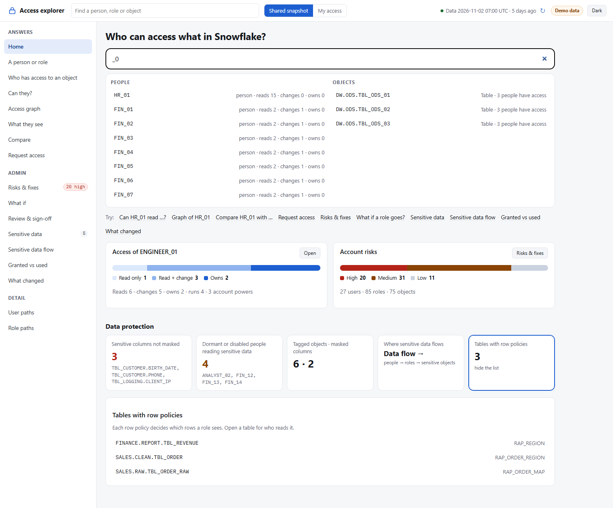
Top bar
- Find: any person, role or object; a user and a role with the same name are two hits. Find and every picker search on the server as you type: arrow keys and Enter pick, Escape or a click elsewhere closes the list.
- Shared snapshot / My access: the whole account, or only your own access read live with your rights (My access).
- Data from <time> and ↻ (Read Snowflake again); with
SOURCE=objectsalso Rebuild snapshot, which CALLs the procedure. Demo data marks fake data; Dark switches the theme. - Incomplete · N sources (side menu): what could not be read, why, and the grant that fixes it.
- Data from <time> (side menu): where the data came from, how long it is kept, and the file and schema of its SQL copy (or why there is none).
Side menu and tabs
- Answers: Home, A person or role, Who has access to an object, Can they?, Access graph, What they see, Compare, Request access.
- Admin: Risks & fixes (badge: High findings), What if, Review & sign-off, Sensitive data, Sensitive data flow, Granted vs used, What changed.
- Detail: User paths and Role paths, the full detail pages.
- Every screen splits into tabs. The first tab keeps the detailed diagram or table; the newer views are the tabs next to it.
- Every view is a link (
?page=check&role=F_MARKETING&obj=…), so you can share it. Older links (?page=user&part=sees,?page=catalog, …) open the screen that now shows that part. - Change plan, rule On/Off and mutes, review decisions and watched questions are saved in this browser only.
How to read a graph
Every graph runs left to right: the start, one lane per depth, then objects. Click a box to open it; hover a box or line for details; drag to pan, + / − / fit to zoom. A graph of up to 6 lanes opens fitted, a bigger one centred on the box it starts from; Tab moves between boxes and Enter opens one; on a touch screen the first tap shows the tip and the second opens. The legend lists only what the graph draws. A user and a role with the same name are two boxes. The legend sits under each graph.
- ENGINEER_01
- User (person or service)
- OLD_USER
- Disabled user
- F_ANALYST
- Functional role: a job role
- T_SALES_CORE_READ
- Technical role: holds the privileges
- GRP_ANALYSTS
- Group role or other (identity provider, PUBLIC)
- HR.SC_R_PEOPLE
- Database role (DB.ROLE): held like a role, not an object
- SYSADMIN
- Admin role or account privilege
- TBL_CUSTOMER
- Object; lock = sensitive
- Inherits: the left role is granted the right one
- Also deeper: the role is also reached by a longer chain
- Read: SELECT, REFERENCES, READ (stage), USAGE on database / schema
- Write: INSERT, UPDATE, DELETE, TRUNCATE, WRITE (stage), ADD …
- Own: OWNERSHIP
- Use: USAGE on warehouse, procedure, function; MONITOR
- Manage: CREATE …, MODIFY, OPERATE, APPLY …
- ACCOUNT
- Account: MANAGE GRANTS, EXECUTE TASK, …
- DEPTH 2
- Lane = roles from the start to the role, that role included
- T_X D2 · also D3
- Drawn once at its shortest depth; also reached at D3
- High · 3
- Rule findings on the box: red Critical / High, amber Medium, grey Low; click opens them
- SELECT ×40
- Arrow label: the privilege, on 40 objects of a group
- DB1 · 400 objects
- Combined box: many objects of one schema, database or type; click to open it
- ⋯ 47 roles ⋯
- Folded roles; click to draw them
- ⋯ Snowflake built-in (via PUBLIC) ⋯
- Snowflake's own grants every user gets through PUBLIC: one folded box, never findings (
?builtin=1shows them)
Home
?page=homeAnswersWhere do I start, what can I reach, and how risky is the account?
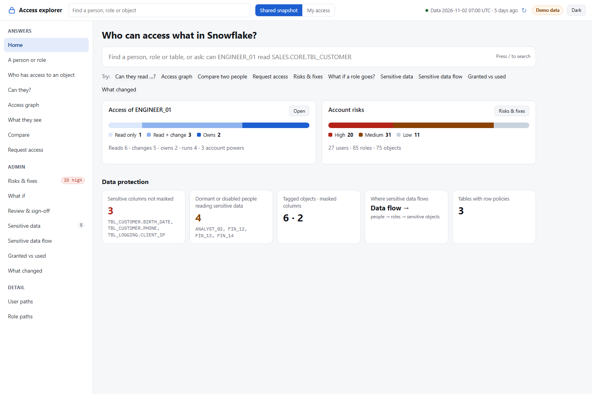
How to read
- Search a person, role, table or screen, or type a question:
can ENGINEER_01 read SALES.CORE.TBL_CUSTOMER(a role works too:can F_MARKETING read …). Press / to jump to it. - Each hit has a one-line answer (what a person or role reaches, who reaches an object); warehouses are their own group; matching screens are listed too.
- Try shortcuts open a screen filled with the first hit, or the default user.
- Findings by area (Account risks): one bar per rule area, coloured by severity; a click opens the Rules list at that area.
Cards
- Access of …
- Your objects as a ladder: Read only, Read + change, Owns; plus runs and account powers
- Account risks
- Findings by severity, with users, roles and objects counted
- Data protection
- Sensitive columns not masked, dormant or disabled people reading sensitive data, tagged objects and masked columns (opens the catalog), Data flow, tables with row policies
A person or role
?page=access&user=ENGINEER_01 · ?page=access&role=F_ENGINEERAnswersWhat can this person or role reach, through every role, at any depth?
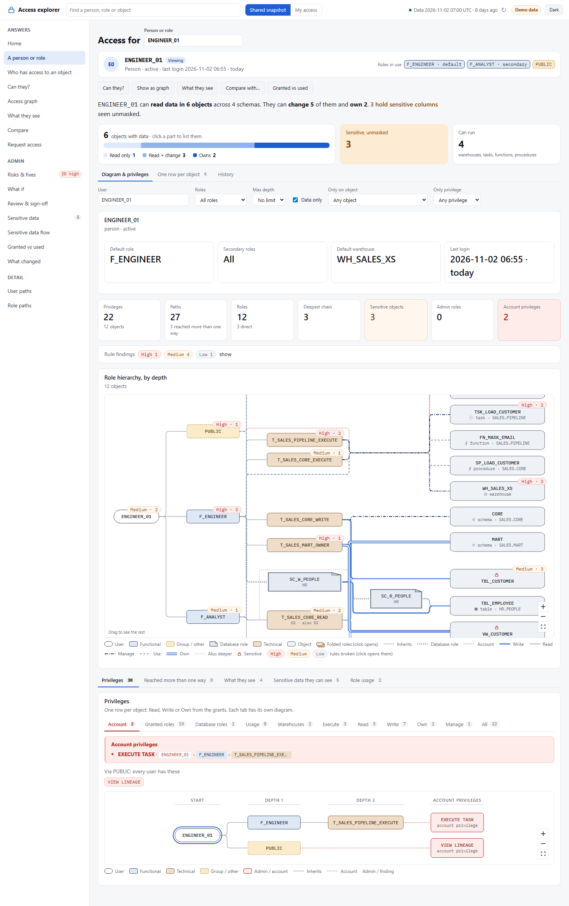
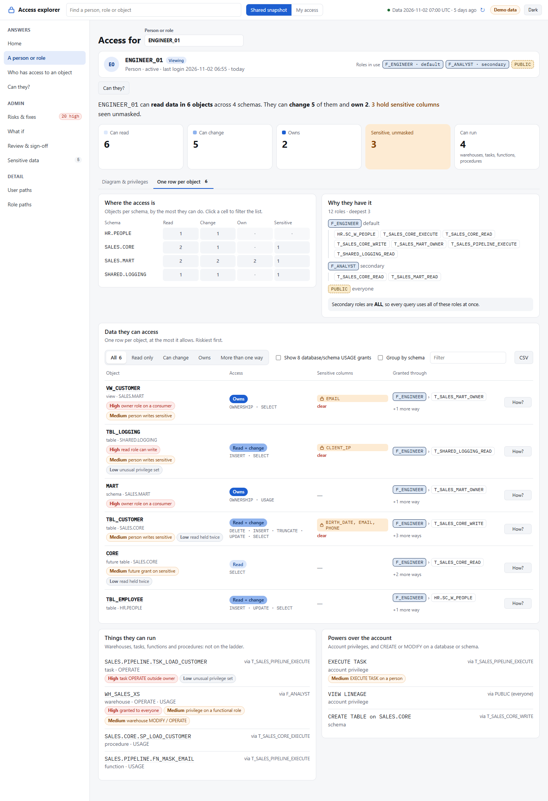
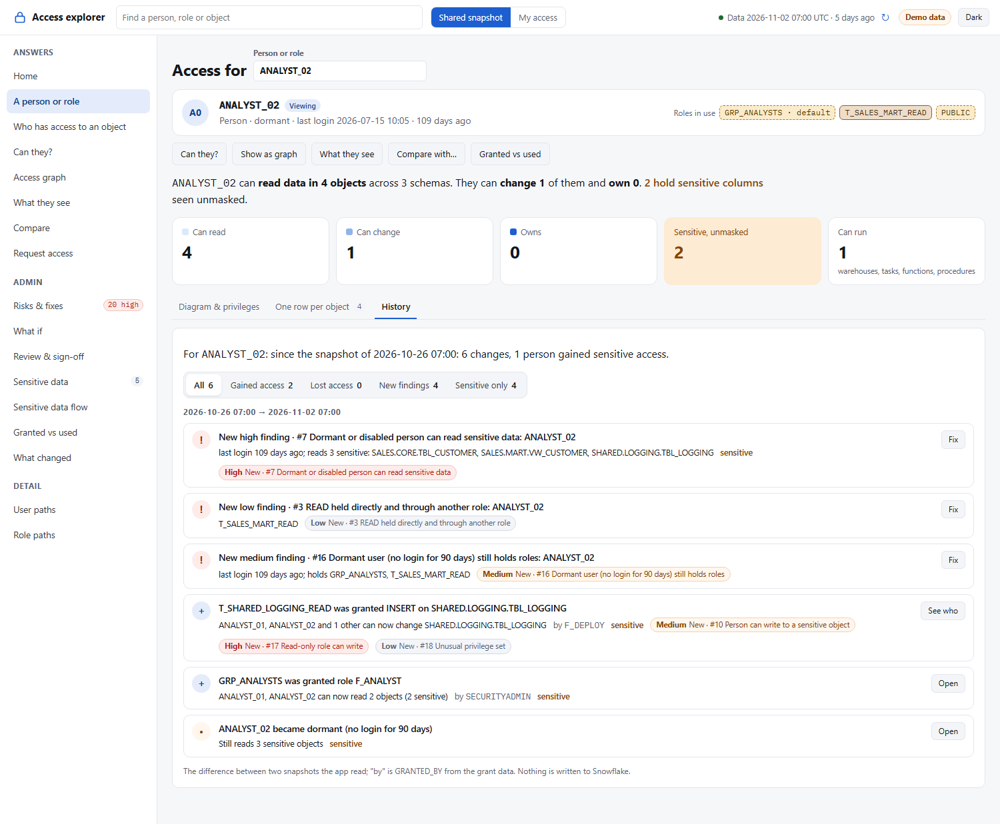
How to read
- One picker for a person or a role, with recently viewed chips next to it. The header shows the profile and the roles in use (default, secondary, PUBLIC).
- Buttons: Can they?, Show as graph, What they see, Compare with…, Granted vs used.
- The sentence and tiles: can read, can change, owns, sensitive unmasked, can run (warehouses, tasks, functions, procedures). A tile opens the matching rows.
Tabs
- Diagram & privileges
- For a role: Diagram, held by & holds. The full detail page (User / Role paths): filters, profile, KPIs, rule findings, the role hierarchy by depth, privilege tabs
- One row per object
- Each object at the most it allows, with the role it comes through. Chips All / Read only / Can change / Owns / More than one way; Group by Schema or Type; sort Riskiest first or Name
- History
- The What changed feed for this subject
Who has access to an object
?page=object&name=SALES.CORE.TBL_CUSTOMER&show=whoAnswersWho can touch this table, view, warehouse or schema, how, and what does each of them see of it?
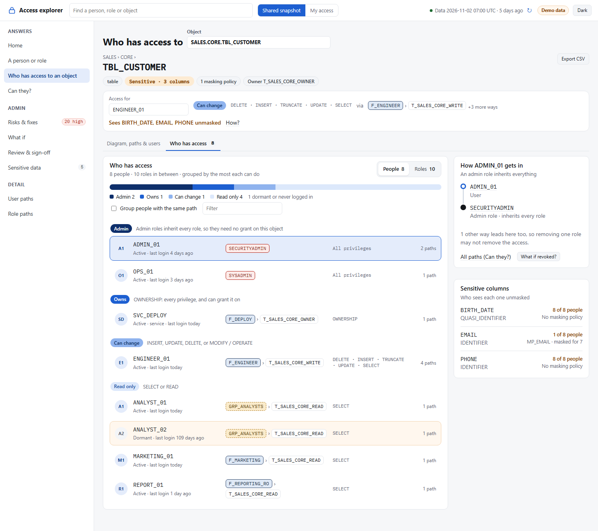
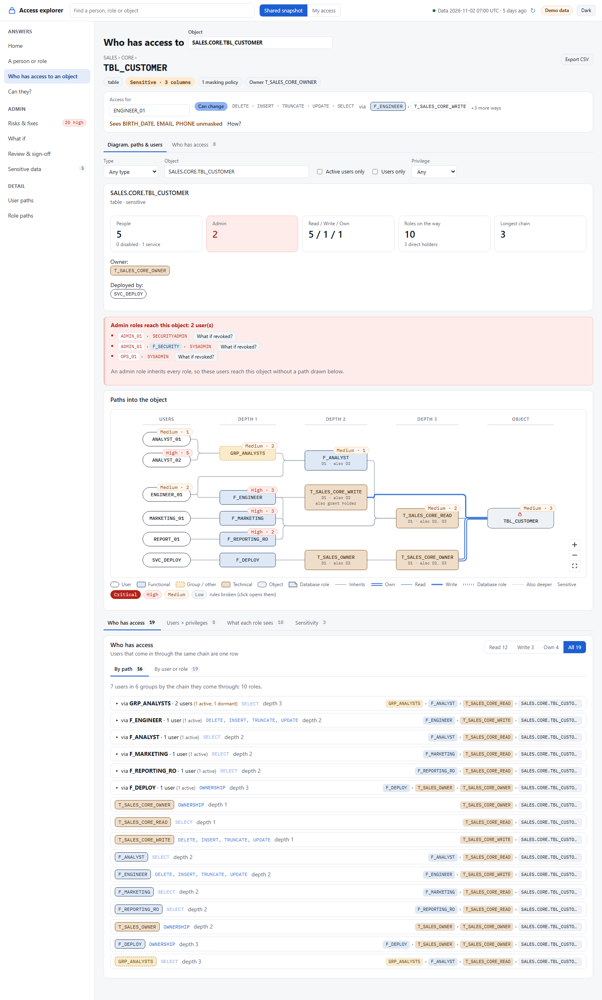
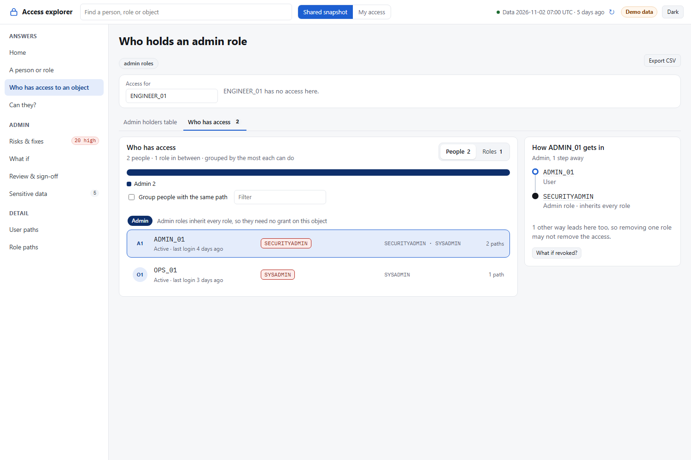
preset=admin).How to read
- Above the tabs: breadcrumb, name, tags (type, sensitive columns, masking and row policies, owner) and Access for [person]: that person's level on this object.
- Levels: Admin, Owns, Can change, Read only, Can use, Can see names. Disabled and dormant rows are tinted; "N disabled still hold access" is called out.
- Click a row: How X gets in lists all paths (to Can they?) and What if revoked?. Group people with the same path (on for warehouses) reads "23 people via PUBLIC (everyone)".
- A red banner lists users who reach it only through admin roles.
Tabs
- Diagram, paths & users
- Paths into the object graph, KPIs (people, admin, read / write / own, roles on the way, longest chain) and sub-tabs Who has access, Users × privileges (links the review grid), What each role sees, Sensitivity (tags and their origin, masking per column, policy text)
- Who has access
- People or Roles, grouped by level, with status, last login, path chips, privileges and path count
- History
- What changed on this object
Can they?
?page=check&name=ENGINEER_01&obj=… · ?page=check&role=F_MARKETING&obj=…AnswersCan this person or role use this privilege on this object, through which routes, where would I cut it, and what is the nearest way in?
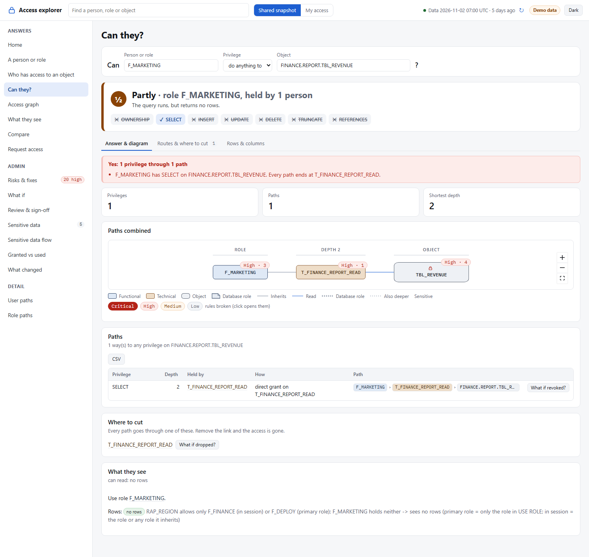
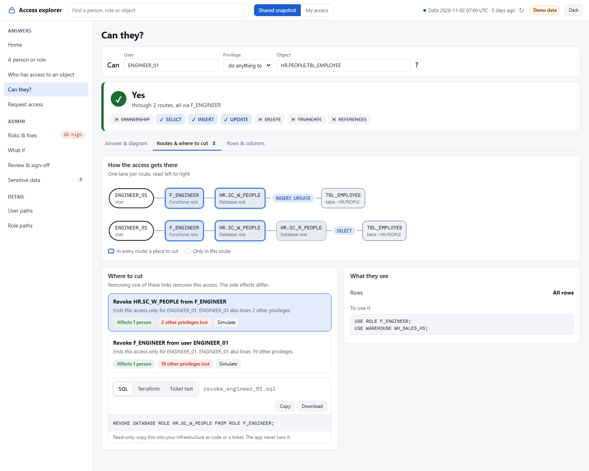
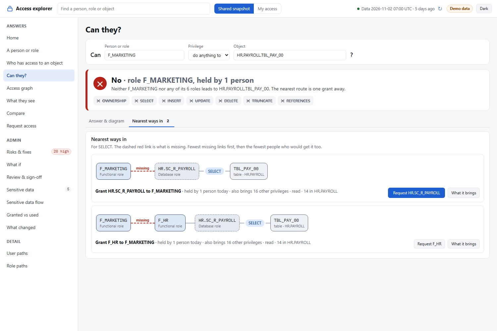
How to read
- The question is a sentence: Can [person or role] [privilege] [object]? The privilege can be one privilege or "do anything to".
- Verdict: Yes, Partly (granted, but the row policy returns no rows or columns are masked) or No, with each privilege held or struck through.
- A person: every granted role counts (secondary roles ALL), no depth limit. A role: its own grants plus the roles it inherits; routes start at the role, "held by N people" is the blast radius, and No reads "Neither R nor any of its N roles".
- A database role: ways in only from database roles of its own database, and no USE ROLE line (USE ROLE can't take a database role). An admin role answers Yes through itself.
Tabs
- Answer & diagram
- The banner, KPIs (privileges, paths, shortest depth), paths combined as a graph, every path with What if revoked?, where to cut and What they see with the USE ROLE line
- Routes & where to cut
- One lane per distinct route; roles on every route are places to cut, with side effects (people who lose it, other privileges lost), Simulate (What if) and the revoke as SQL / Terraform / ticket
- Nearest ways in
- On No: the fewest grants that would give it, then the fewest people who would get it too, with the too broad and rule 1 warnings; Request and What it brings
- Rows & columns
- 1 Grant, 2 Rows, 3 Columns, each with its result and the reason from the policy text
Request access
?page=request&name=…&obj=… · ?page=request&for_role=F_MARKETING&obj=…AnswersWhich existing role should I ask for, who approves it, and what text goes in the pull request or ticket?
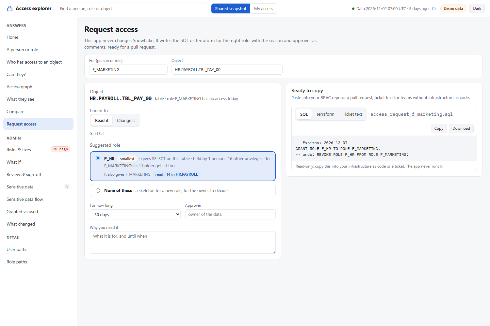
How to read
- For (person or role), object, then Read it or Change it: the privileges that needs.
- Suggested roles: the smallest existing functional role first, with its holders and what else it brings (sensitive columns it shows included); the role picked on Can they? is offered too. None of these writes a commented skeleton for a new role, for the owner to decide.
- For a person:
GRANT ROLE x TO USER u. For a role:GRANT ROLE x TO ROLE r, with the too broad (it also reaches the people holding r) and rule 1 warnings; a role that already holds r (a loop) is never offered. - For a database role: a skeleton for a new database role in its own database (
GRANT DATABASE ROLE … TO DATABASE ROLE …), or why it can't be done when the object is in another database.
Fields
- For how long
- Writes the expiry date as a comment
- Approver
- From the object's owner tag (
OWNER_TAGS), else blank - Why you need it
- Goes into the comments
- Ready to copy
- SQL, Terraform or ticket text, Copy or Download. Text only: the app never runs it
Access graph
?page=graph&table=… | role=… | user=…&show=traceAnswersHow does access flow from a table, role or person through the role graph, and which paths are risky?
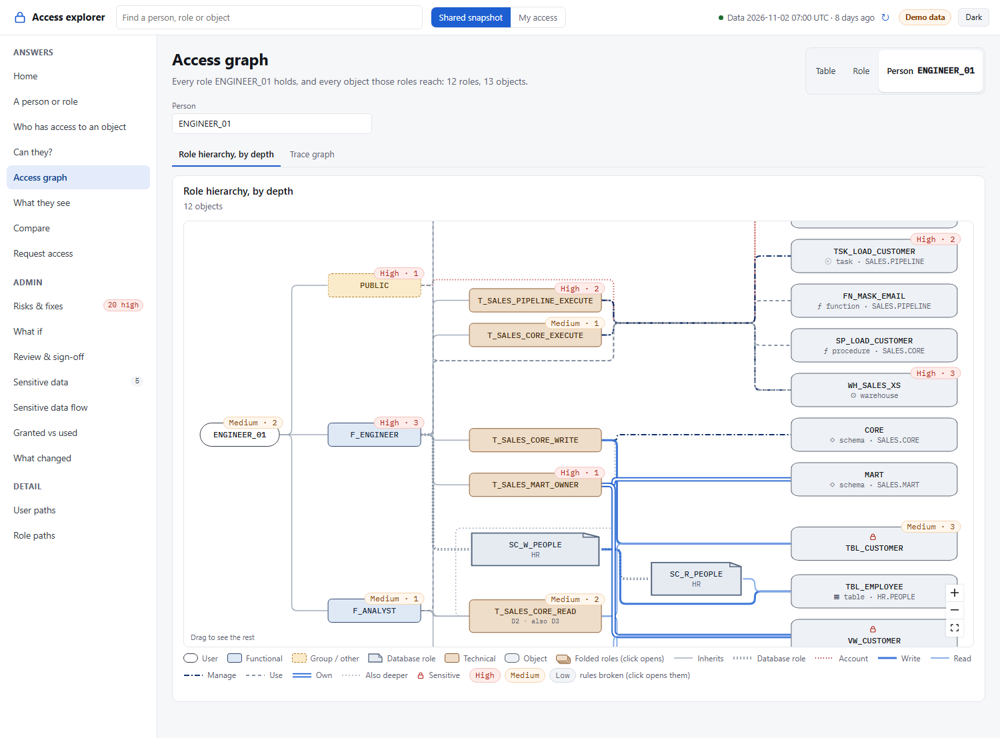
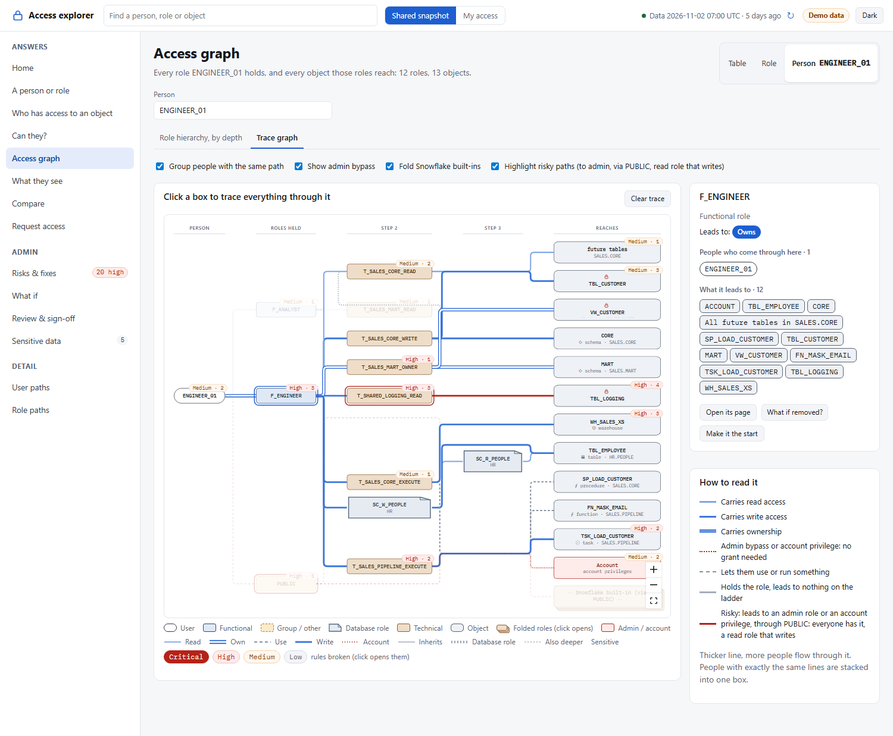
How to read
- Start from a Table, Role or Person. Lines are coloured by what they end up granting (read, write, own, use; admin and account privileges red dotted); width = people flowing.
- People with the same path are stacked (
same=0ungroups); admin people and roles can be hidden (admin=0); PUBLIC built-ins folded (builtin=1unfolds). - Risky paths (
risky=1): to an admin role or account privilege, via PUBLIC, or a read role that writes. - Click a box: everything not through it fades; the side panel lists the people through it and what it leads to, with Open its page, What if removed? and Make it the start.
Tabs
- Role hierarchy, by depth
- The diagram of the person, role or object page
- Trace graph
- Columns by shortest step, colour by grant, focus on click
What they see
?page=see&user=…&show=cardsAnswersWhich columns does this person or role see in clear or masked, which rows, and why?
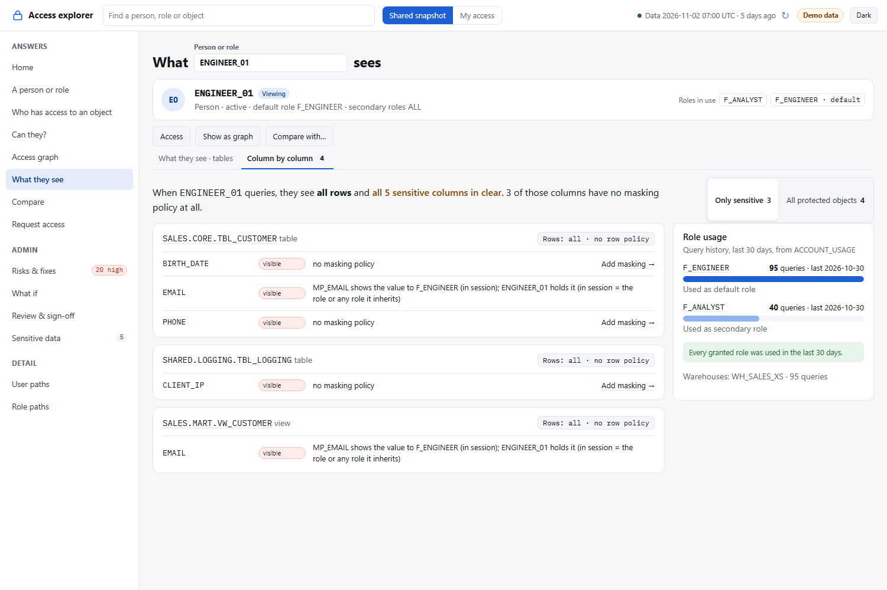
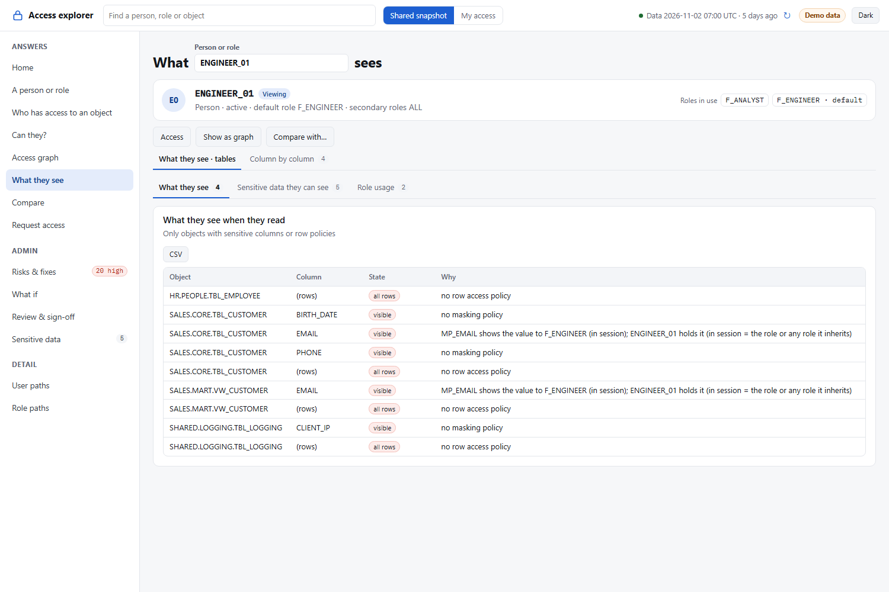
How to read
- Each card: the rows chip (all, filtered, no rows, unknown) and each column visible or masked, with the reason from the policy text.
- Add masking → (rule 6) on a sensitive column without a policy. Only sensitive or All protected objects (
all=1). - Policies are read from their text, not evaluated: role listed = all rows / clear; role not listed and the body ignores the argument columns = no rows; role check AND argument condition = filtered; anything else = unknown.
IS_ROLE_IN_SESSIONcounts inherited roles,CURRENT_ROLE()only the primary role.
Tabs
- What they see · tables
- What they see, Sensitive data they can see, Role usage
- Column by column
- The sentence, the cards and role usage bars
Compare
?page=compare&a=…&b=…&scope=sensitive|all|db&show=diffAnswersHow do two people or roles differ, and what text would make them match?
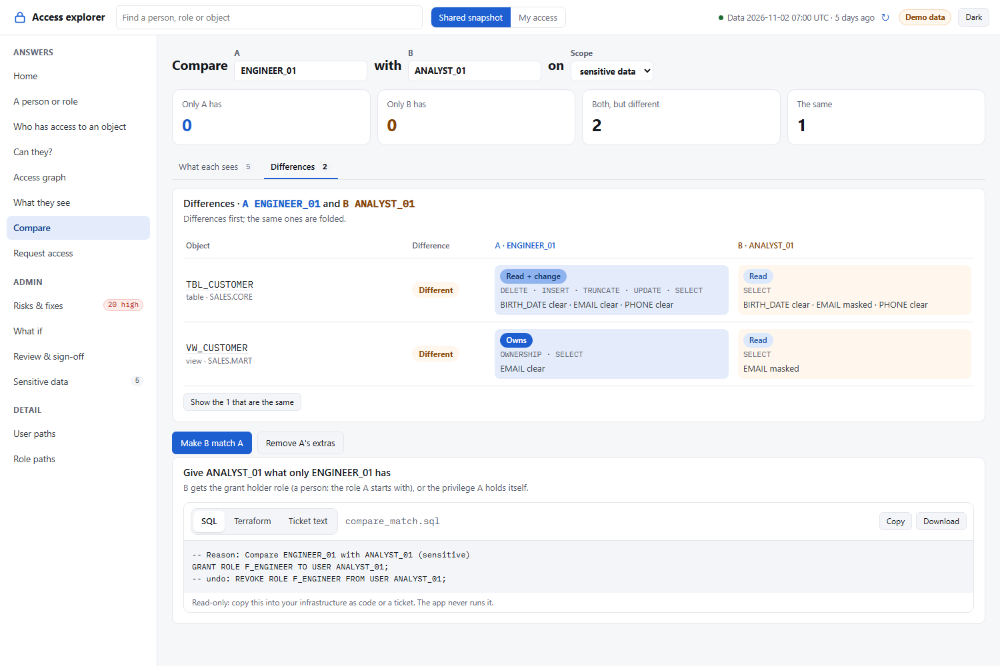
How to read
- Two overlapping circles: only A, only B, and in the overlap both but different and the same; a click opens the differences. Scope: sensitive data, everything or one database.
- Make B match A or Remove A's extras writes SQL / Terraform / ticket text; Simulate runs it on What if.
Tabs
- What each sees
- Side by side, per object
- Differences
- The differences and the plan to fix them
Risks & fixes
?page=rules · &show=fixes&sev=High&by=rule|person|object|grid · &show=list&area=…AnswersWhere does the role model break its own rules, what is the fix, and what happens if I apply it?
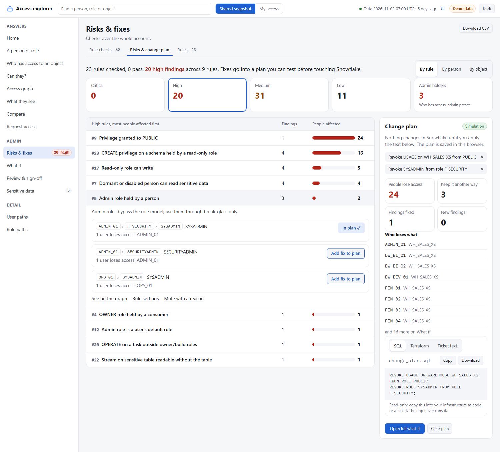
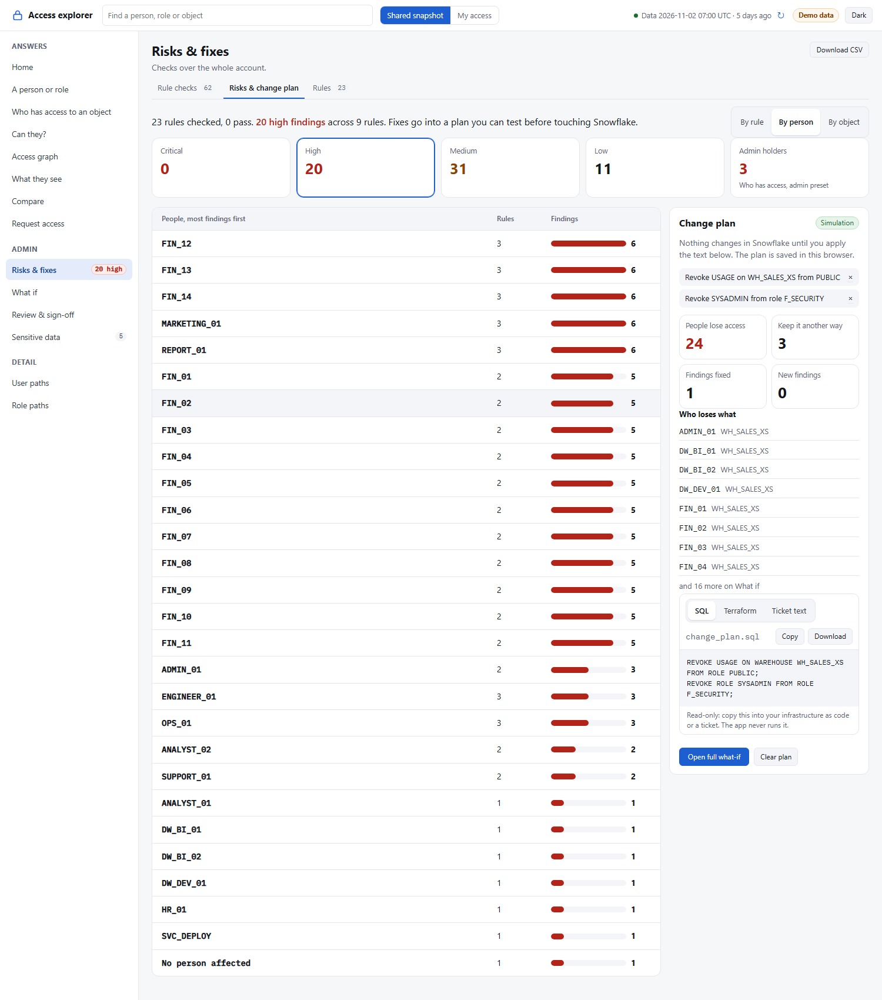
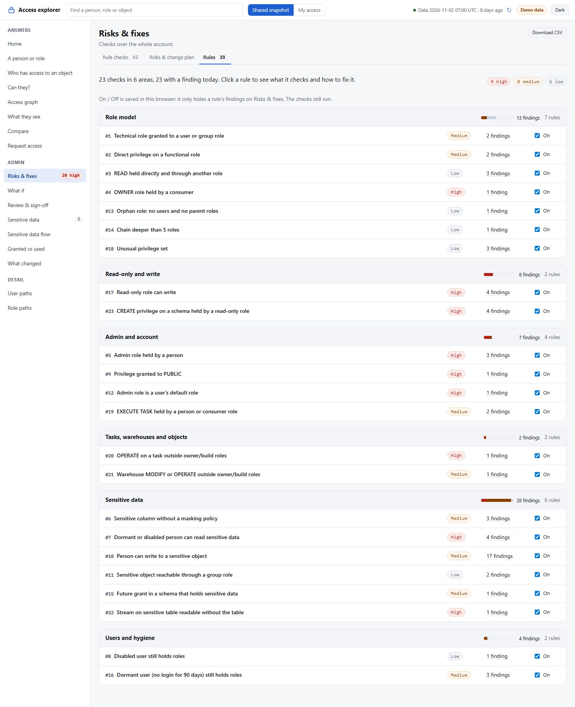
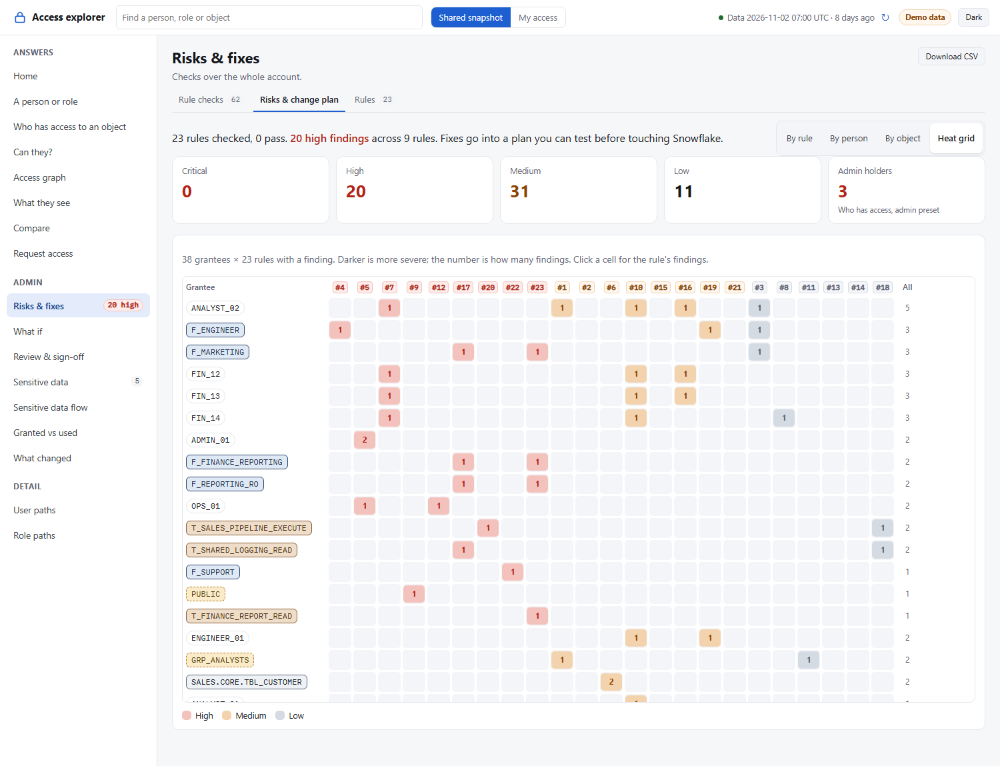
How to read
- Severity tiles filter (click the active one again for all); the Admin holders tile opens the object screen's admin preset.
- Group by rule, person or object, or show the Heat grid (grantee x rule; a cell opens that rule's findings); rule rows are sorted by people affected. Open one: why it matters, findings with chain chips, Add fix to plan, See on the graph, Rule settings, Mute with a reason.
- The Change plan panel: items, impact tiles (people lose, keep it another way, findings fixed, new findings), who loses what (a lose-vs-keep bar and people who lose the same thing as one row, the removed link crossed out), SQL / Terraform / ticket text, Open full what-if. Simulation only.
- Findings without a grant to revoke show their fix as text.
Tabs
- Rule checks
- Findings with severity tabs (one row per rule and fix, detail, path, fix as infrastructure-as-code text + SQL, CSV), Admin holders with the chain, Rules
- Risks & change plan
- The view above
- Rules
- The 28 rules by area with severity counts, a findings link and On/Off; expand for What it checks and How to fix
The 28 rules
| # | Severity | Rule | Why it matters |
|---|---|---|---|
| Role model | |||
| 4 | High | OWNER role held by a consumer | Owners can drop and re-grant objects; only the build identity should own. |
| 1 | Medium | Technical role granted to a user or group role | Technical roles belong under functional roles only. |
| 2 | Medium | Direct privilege on a functional role | Privileges sit on technical roles, so the role model stays reviewable. |
| 3 | Low | READ held directly and through another role | The direct grant is redundant and survives when the other one is removed. |
| 13 | Low | Orphan role: no users and no parent roles | Unused roles hide access that nobody reviews. |
| 14 | Low | Chain deeper than 5 roles | Long chains are hard to review and hide where access comes from. |
| 18 | Low | Unusual privilege set | The role holds more or fewer privileges than its capability (READ, WRITE, ...) stands for, so its name no longer tells what it can do. |
| Admin and account | |||
| 5 | High | Admin role held by a person | Admin roles bypass the role model; use them through break-glass only. |
| 9 | High | Privilege granted to PUBLIC | Every user, present and future, gets it. |
| 12 | High | Admin role is a user's default role | Every session starts with admin rights. |
| 19 | Medium | EXECUTE TASK held by a person or consumer role | Running tasks belongs to the build or a service user. |
| Sensitive data | |||
| 7 | High | Dormant or disabled person can read sensitive data | Unused access to sensitive data is pure risk. |
| 22 | High | Stream on sensitive table readable without the table | A stream returns the table's changed rows, so it leaks data its reader cannot read in the table. |
| 6 | Medium | Sensitive column without a masking policy | Everyone who can read the object sees the value in clear. |
| 10 | Medium | Person can write to a sensitive object | Writes to sensitive data should come from the build or a service user. |
| 15 | Medium | Future grant in a schema that holds sensitive data | New tables there are readable before anyone classifies them. |
| 11 | Low | Sensitive object reachable through a group role | Group membership is managed outside Snowflake, so reviews miss it. |
| Read-only and write | |||
| 17 | High | Read-only role can write | The role name or its use says read-only, but it can change data. |
| 23 | High | CREATE privilege on a schema held by a read-only role | A read-only role that can create objects can copy data or change the schema. |
| Tasks, warehouses and objects | |||
| 20 | High | OPERATE on a task outside owner/build roles | The task runs with its owner's privileges, so whoever can start or resume it borrows them. |
| 21 | Medium | Warehouse MODIFY or OPERATE outside owner/build roles | Resizing, suspending or resuming a warehouse changes cost and availability for everyone. |
| Users and hygiene | |||
| 16 | Medium | Dormant user (no login for 90 days) still holds roles | Unused accounts are an easy way in. |
| 8 | Low | Disabled user still holds roles | Re-enabling the user brings all access back at once. |
| Activity | |||
| 25 | High | Service user used from an interactive client | A person is typing queries with the service user's credentials: nobody can tell who did what. |
| 26 | High | Admin role used to read or change data | Admin roles bypass the role model; data work belongs to functional roles. |
| 24 | Medium | Person changed data or a table's definition | Changes should come from the build or a pipeline's service user, so they are reviewed and repeatable. |
| 28 | Medium | Unusual volume on a table | A day far above the usual can be an export, a runaway job or misuse. |
| 27 | Low | First access to a table in the last 7 days | New use of a table nobody expected is worth a look, most of all on sensitive data. |
What if
?page=whatif&changes=… · &show=plan&by=people|objects|roles|findingsAnswersIf we revoke this, who loses what, who keeps it another way, and which findings go or appear?
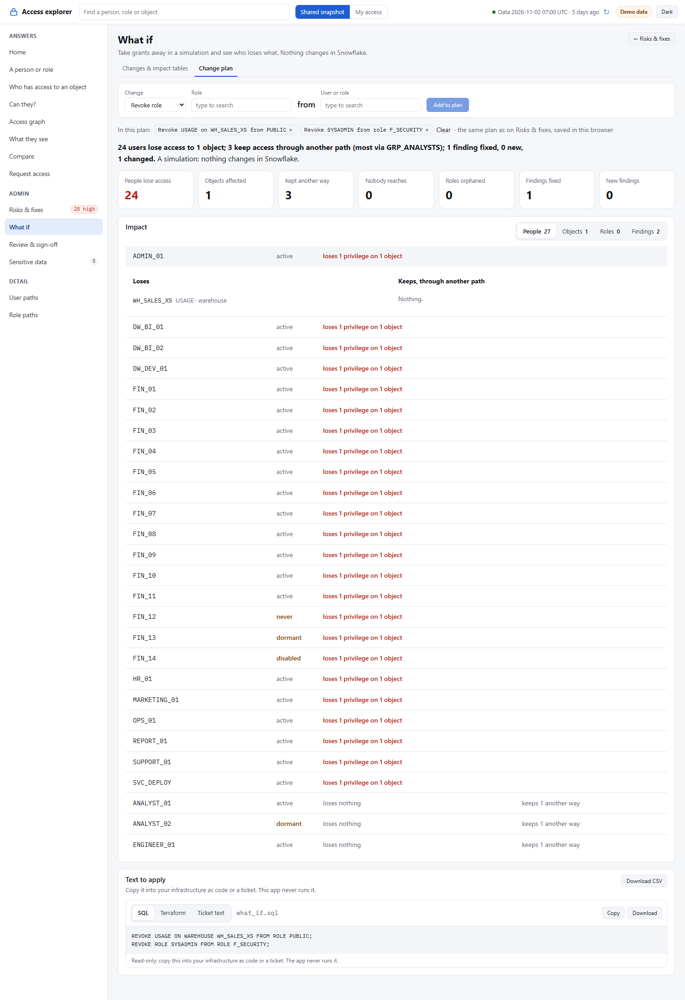
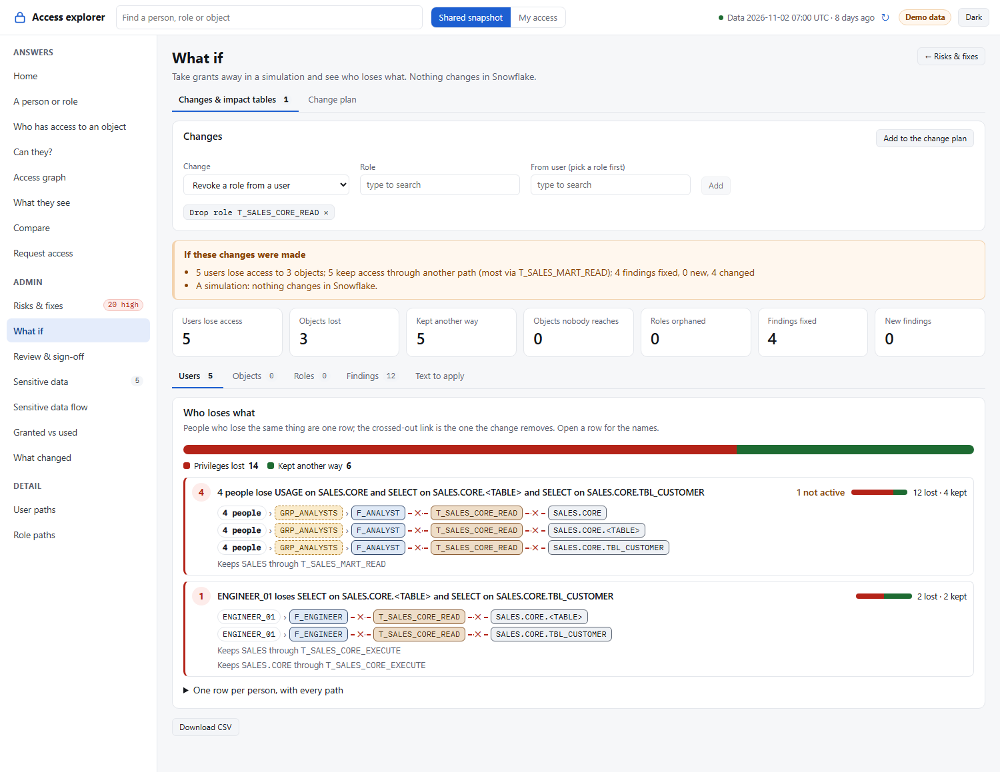
How to read
- One line: [Revoke role | Drop role | Revoke privilege | Empty PUBLIC] [role] from [user or role] [Add to plan]. After you pick a role, only the users or roles that reach it are offered, direct ones first.
- Seven impact tiles; a bar of privileges lost against kept another way; people who lose the same thing are one row, with the path and the removed link crossed out (open a row for the names; one row per person below). Objects left unreached and roles left empty are listed.
- The same plan as Risks & fixes, saved in this browser. A simulation: it prints REVOKE text for your infrastructure as code and never runs it.
Tabs
- Changes & impact tables
- Users, Objects, Roles, Findings, Text to apply (CSV)
- Change plan
- Group by People / Objects / Roles / Findings, CodeOutput (SQL / Terraform / ticket)
Review & sign-off
?page=review&db=SALES · &show=grid&scope=sensitive|db|allAnswersWho can reach what, as a list or a grid to keep or revoke and sign off?
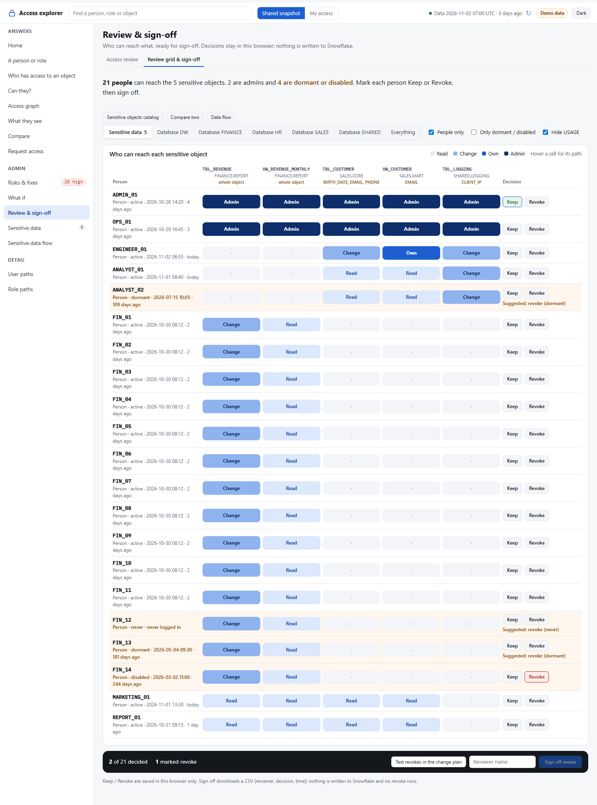
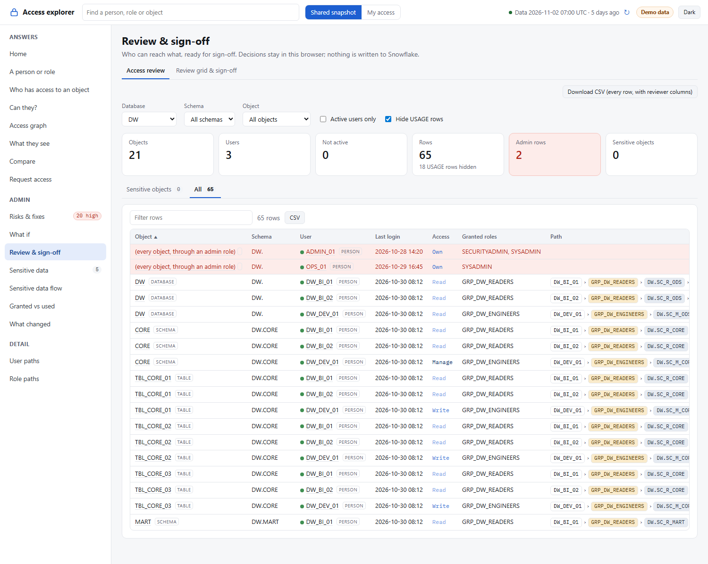
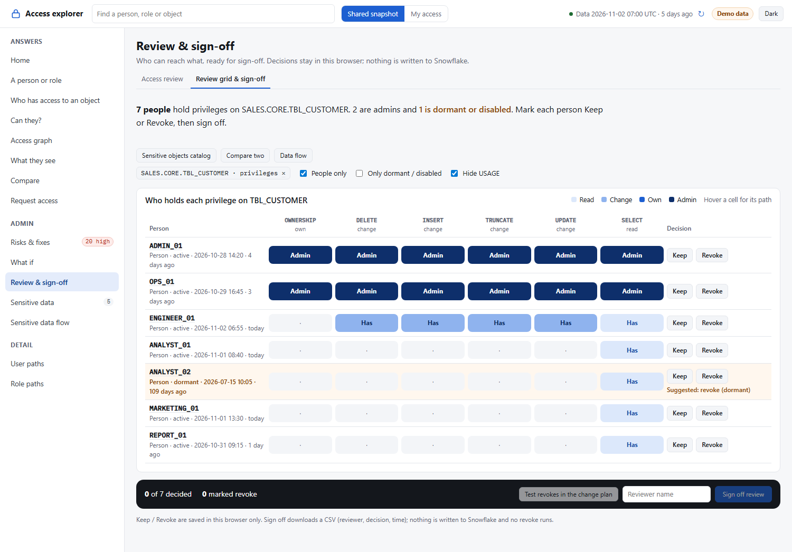
How to read
- Scope chips: Sensitive data, Database X, Everything; People only, Only dormant / disabled, Hide USAGE. Hover a cell for the path and privileges.
- Dormant, disabled and never-logged-in people are tinted with "Suggested: revoke" (service users never are).
- Footer: decided count; Test revokes in the change plan simulates them on What if; Sign off downloads a CSV with the reviewer, the decisions and a UTC timestamp, in the browser.
Tabs
- Access review
- One row per user and object (Sensitive objects / All), KPIs, shortest path, CSV with blank Reviewer and Keep/Revoke columns
- Review grid & sign-off
- The grid above;
object=…&columns=privilegesfor one object
Sensitive data
?page=sensitive · &show=catalogAnswersWhich objects hold sensitive data, who can read them, and how well is each one protected?
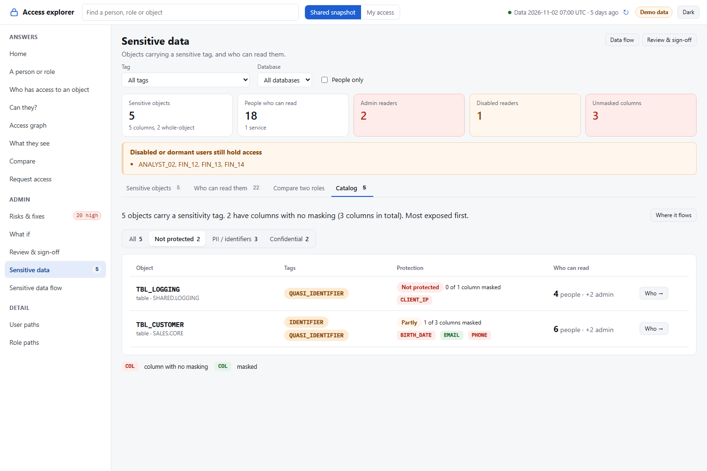
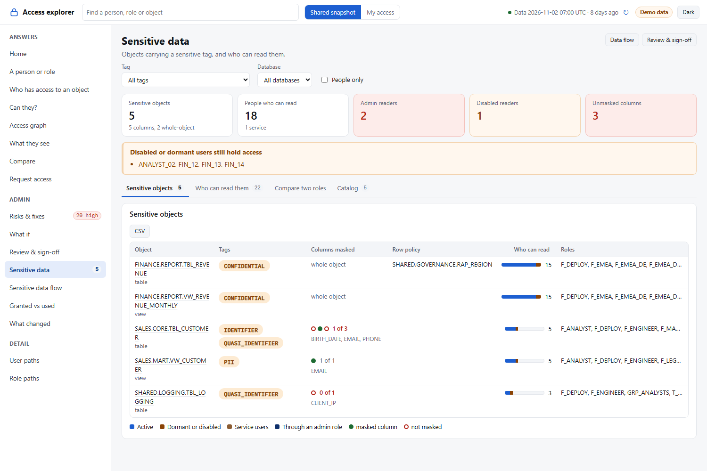
How to read
- Sensitive = a tag in
SENSITIVE_TAGSon a column, the object, its schema or database. - Catalog filters: All, Not protected (a sensitive column without masking), PII / identifiers (
PII_TAGS), Confidential (CONFIDENTIAL_TAGS). - Status: Not protected, Partly ("1 of 3 columns masked"), Protected, or Whole object (row policy). Readers counted (+ admins); Who → opens the object screen.
Tabs
- Sensitive objects
- Tagged objects, most reached first, masked count
- Who can read them
- People and roles, admin holders last
- Compare two roles
- Two roles side by side on sensitive data; Compare does the same for people too
- Catalog
- The protection view above
Sensitive data flow
?page=flow&sel=…AnswersWhich groups of people reach sensitive data, through which roles, and are the dormant or disabled among them?
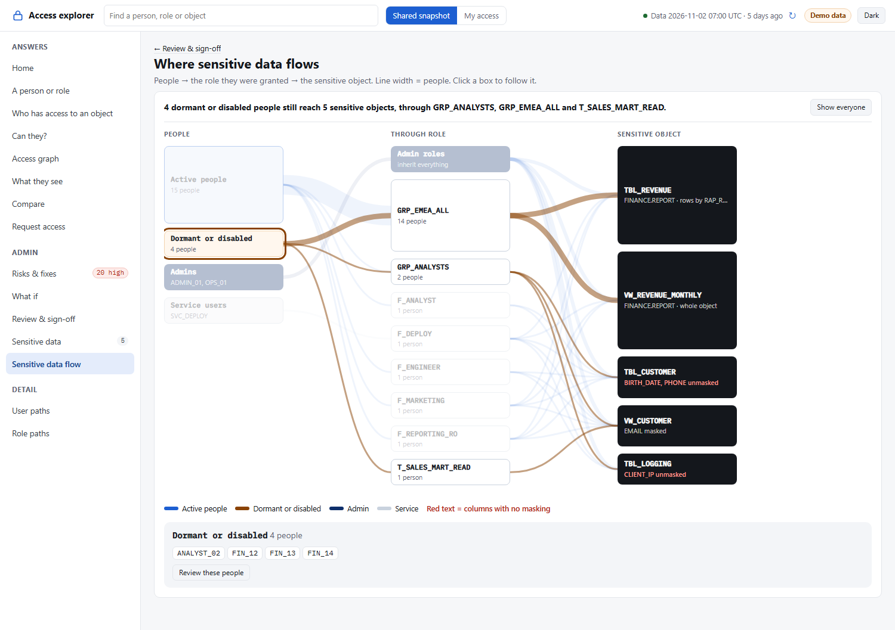
How to read
- People are grouped Active, Dormant or disabled, Admins, Service. The object subtitle is red when columns are unmasked.
- Click a box to follow it: only its people and their links stay, with the headline sentence and a panel (people, Who has access / Open the role, Review these people). Default: Dormant or disabled;
sel=noneshows everyone. - Over 12 roles the smallest fold into "Other roles (N)". Shared snapshot only.
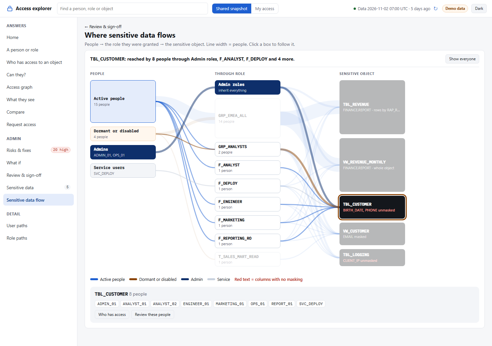
Granted vs used
?page=usage&user=…&days=30|90|180&show=trimAnswersWhich granted tables and views were actually used, and what could be trimmed?
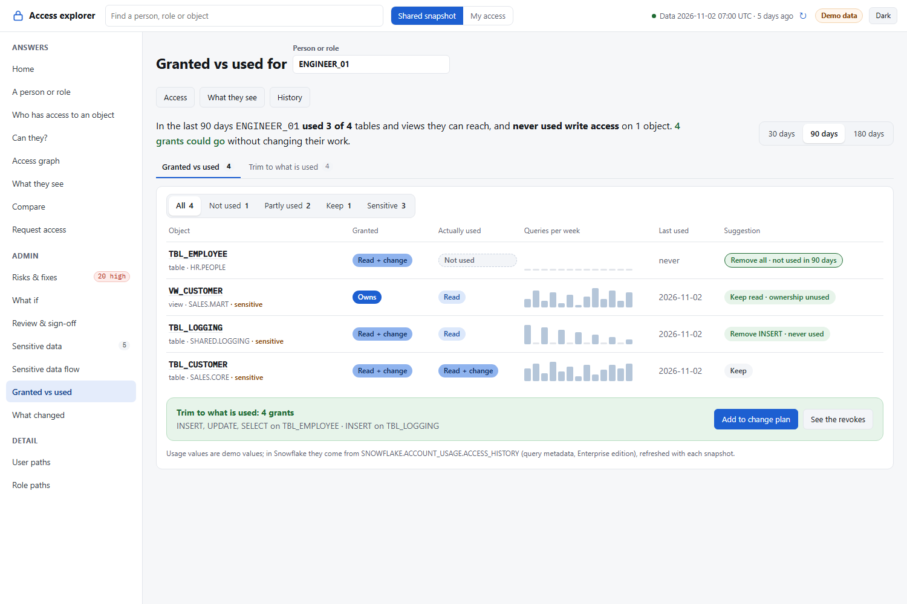
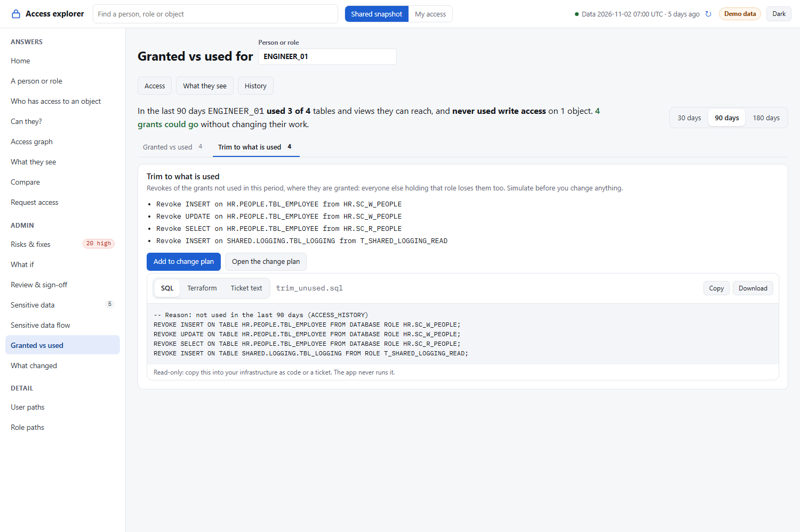
How to read
- One row per table or view reached: granted level, used level or Not used, weekly bars, last used, and Keep / Remove INSERT never used / Remove all. Chips All, Not used, Partly used, Keep, Sensitive.
- Trim to what is used: N grants adds the revokes, at the roles that hold them, to the change plan (ownership is never revoked).
- Reads
ACCOUNT_USAGE.ACCESS_HISTORY(Enterprise edition), aggregated per user, object and week: query metadata, never table data. Without it the screen says why and which grant enables it.
Tabs
- Granted vs used
- The rows, over 30, 90 or 180 days
- Trim to what is used
- SQL / Terraform / ticket text
What changed
?page=changes&show=watchAnswersWhat changed since the previous snapshot, and did the answer to the questions I watch change?
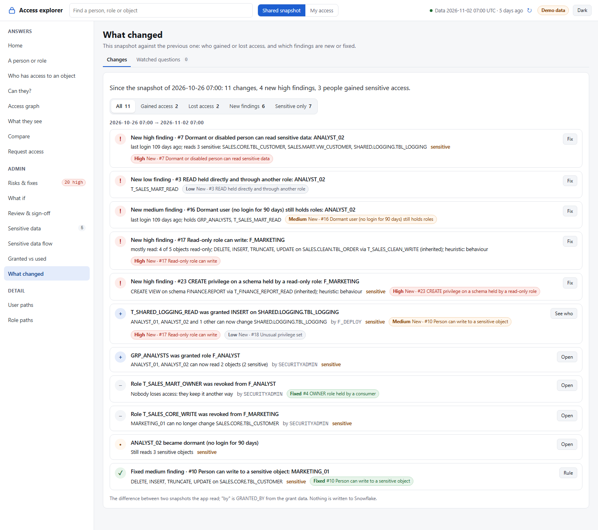
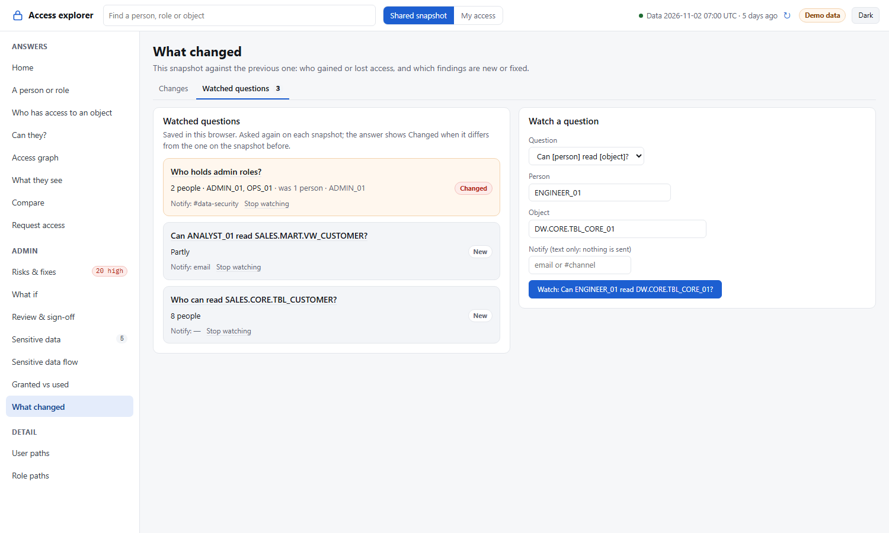
How to read
- Compares the current snapshot with the previous one, which the local version keeps in
.cache/as<name>.prev.pklwhen a new read replaces it. Inside Snowflake, withCACHE_HOURS=0or before a second read, the screen says why it is empty. - A strip of new findings against fixed ones, per severity. Each grant gained or lost is drawn as two boxes and a + or crossed-out link (click a box to open it), with who gains or loses what, people turned dormant or disabled, new and fixed findings, and
GRANTED_BY. Filters All, Gained access, Lost access, New findings, Sensitive only. - Watched questions (Can [person] read [object]? / Who can read [object]? / Who holds admin roles?) are saved in this browser and asked again on each snapshot. Notify is text only; nothing is sent. Shared snapshot only.
Tabs
- Changes
- The feed with icons, impact, finding chips and links
- Watched questions
- Your questions and how their answer moved
User paths and Role paths
?page=user&name=ENGINEER_01 · ?page=role&name=F_ENGINEERAnswersEverything about one user or role on one page: profile, numbers, findings, the role hierarchy and every privilege with its path.
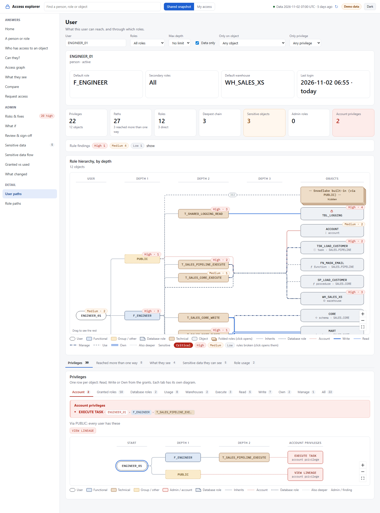
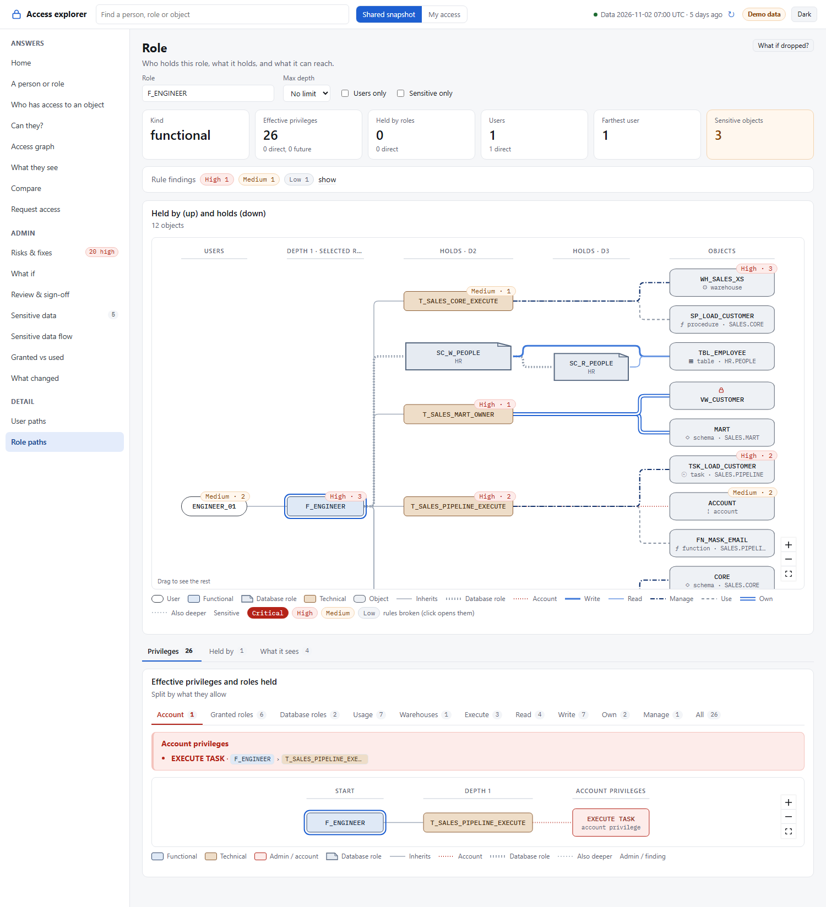
How to read
- The same pages as the first tab of A person or role. Filters: Roles (all granted roles, as secondary roles ALL, or the default role only), Max depth, Data only (hides USAGE on databases and schemas), Only on object, Only privilege.
- Rule findings by severity (show opens them); a red box for account privileges and admin roles, with the chain.
- Privilege tabs: Account, Granted roles, Database roles, Usage, Warehouses, Execute, Read, Write, Own, Manage, All, each with its own diagram. Then Reached more than one way, What they see, Sensitive data they can see, Role usage.
- Role paths: Held by (users, roles, with Only via and If revoked from), What it holds (one table per object type: granted, inherited, owner, lacks), What it sees.
Numbers
- Privileges
- Privilege-on-object pairs reached, on N objects
- Paths
- All chains summed; N reached more than one way survive removing one role
- Roles
- Roles the walk reaches; N granted directly
- Deepest chain
- Largest depth of any privilege
- Sensitive objects
- Sensitive objects it can read (
READ_PRIVS) - Admin roles · Account privileges
- Admin roles reached; account-level privileges
- Role: Effective privileges
- Own plus inherited ("all" for an admin role); held by roles, users, farthest user
Big accounts
?full=1 · ?builtin=1AnswersHow do I read a graph with thousands of objects and hundreds of roles?
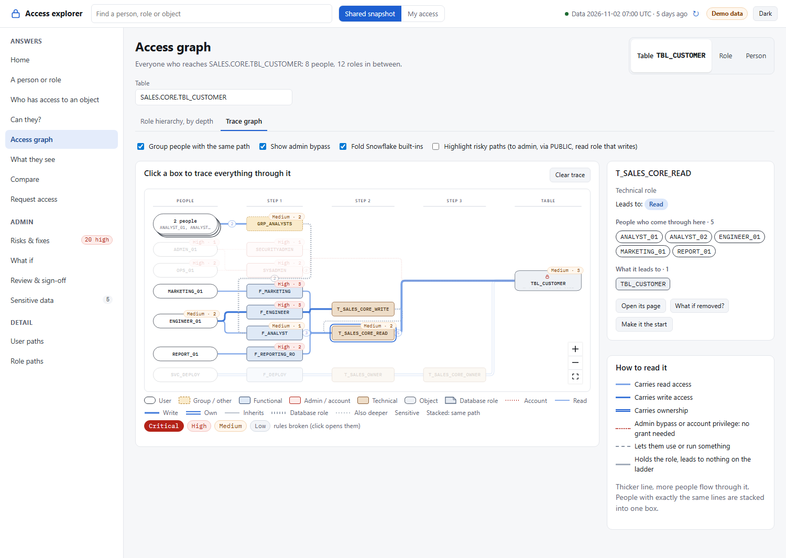
How to read
- Grouping: over 12 objects in a lane the graph combines them by schema, over 12 schemas by database, then by type. A database grant or a warehouse keeps its own box. Tables always list every object.
- Click a combined box to draw its members; many database roles of one database fold into one box.
- Summary: over 30 role boxes or 6 role lanes the graph shows granted roles → one "⋯ N roles ⋯" box each → grant holders → groups. The fold box or
?full=1draws the full chain. - Paths: counts are always exact; full chains are listed up to
MAX_PATHS("first 200 of N").
Numbers
- Group box
- N objects; lock = sensitive objects; badge = findings
- SELECT ×40
- The privilege on 40 of the group's objects
- Fold box
- Roles between a granted role and its grant holders
My access
?data=mineAnswersWhat can I reach, read live with my own rights, without the shared data?
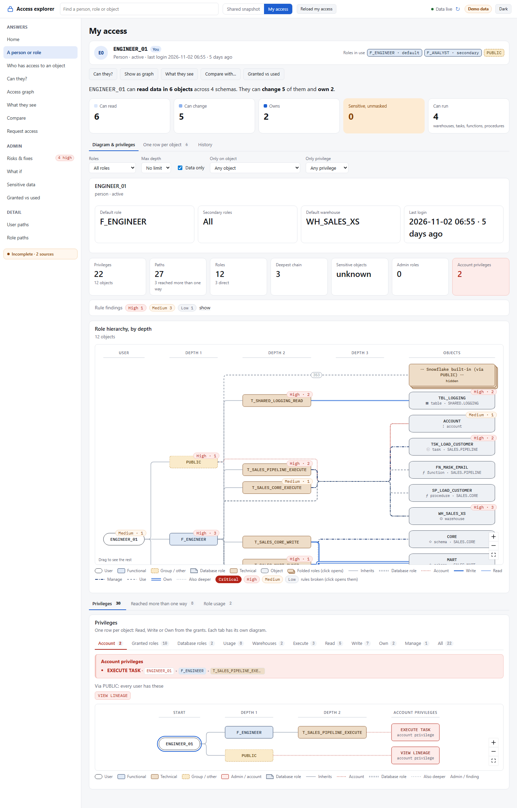
DEMO_USER's slice of the fake data).How to read
- Top bar: My access, then Load my access (Reload my access reads it again). Nothing is written; kept per user in memory and in
.cache/forCACHE_HOURS. - Every screen except the shared-only ones (Review & sign-off, Sensitive data flow, What changed) works on your own roles.
- No tags or policies: sensitivity shows "unknown". Rule checks cover your own roles; rules that need tags, streams or last logins are listed as "Not checked here".
- Only when the login is yours: hidden inside Snowflake (the app runs with its owner's rights), on a shared server (
HOSTnot127.0.0.1/localhost) and with a key-pair login (a service user), where it would show the server's access as the viewer's.MY_ACCESS=1turns it on when the key pair is your own user,MY_ACCESS=0off.
Sources
- Roles
CURRENT_AVAILABLE_ROLES()- Grants
SHOW GRANTS TO ROLE / USER / DATABASE ROLE- Profile
DESC USER- Roles used
ACCOUNT_USAGE.QUERY_HISTORY(30 days) when readable, elseQUERY_HISTORY_BY_USER(7 days)
Run modes and what you need
Set the mode in .env (or run.py --fake | --direct | --objects); then python run.py (local web app, http://localhost:8000) or python run.py streamlit (http://localhost:8501). Install steps: README.md.
| Mode | Set in .env | Needs in Snowflake | You see |
|---|---|---|---|
| Fake data | FAKE=1 (run.py --fake) | Nothing | The demo account used in these screenshots |
| My access | Snowflake settings below; My access in the top bar, then Load my access | A warehouse; for the 7-day query history also a database (SNOWFLAKE_DATABASE or your default namespace) | Your own roles and everything they reach |
| Direct | SOURCE=direct (the default), SNOWFLAKE_* | A role and a warehouse; whole account: IMPORTED PRIVILEGES on DB SNOWFLAKE (fast) or MANAGE GRANTS (SHOW, slow) | The whole account, as far as your role can read it |
| Snapshot tables | SOURCE=objects, ACCESS_SNAPSHOT=<DB>.<SCHEMA>, SNOWFLAKE_* | The one-time setup below; viewers need <APP_ROLE> | One shared, scheduled copy of the whole account |
Direct mode
- For accounts where procedures can't be created: no tables, procedures, functions or setup; nothing is written.
- The app reads grants, future grants, users, query history, tags, policies, streams and object usage with your role when you click Load shared data (a copy from the last 24 h opens at once), and keeps them in memory and
.cache/for 24 h. ↻ (Read Snowflake again) reads again. - Same sources as the procedure (Data sources):
ACCOUNT_USAGEwhere readable, elseSHOW/INFORMATION_SCHEMA(one query per role and per schema, 16 at a time (SHOW_THREADS): minutes on a big account). - Incomplete (side menu) says which dataset fell back or could not be read, and which grant fixes it.
Login
- Browser SSO by default: a tab opens on the machine running the app, so run it on your own machine (a shared server needs a key pair).
- Key pair instead:
SNOWFLAKE_PRIVATE_KEY_FILE(+SNOWFLAKE_PRIVATE_KEY_PWDif encrypted). No passwords. - One login per new connection; an admin's
ALTER ACCOUNT SET ALLOW_ID_TOKEN = TRUE;lets one login last ~4 h.
One-time setup for snapshot tables (developer)
Only if your team can create tables and procedures. A developer runs this once; the app then reads the tables (ACCESS_SNAPSHOT=<DB>.<SCHEMA>). Install as in README.md, .env filled in (run_sql.py switches to DEV_ROLE itself):
copy settings.sql settings.local.sql # fill in DB, SCHEMA, WH, DEV_ROLE, APP_ROLE (SnowSQL: also HERE)
python run_sql.py sql/1_setup.sql; python run_sql.py sql/1_setup_verify.sql
python run_sql.py sql/2_snapshot.sql; python run_sql.py sql/2_snapshot_verify.sql # = CALL SP_ACCESS_SNAPSHOT('AUTO')
DEV_ROLEneedsIMPORTED PRIVILEGESon DBSNOWFLAKE(orMANAGE GRANTS); without it the snapshot holds only what that role sees (table below).1_setup.sqlgrantsAPP_ROLEits access to the tables. GrantAPP_ROLEto the people who use the app, through your infrastructure as code.- Optional, admin:
ALTER ACCOUNT SET ALLOW_ID_TOKEN = TRUE;users then log in once per ~4 h instead of once per connection. - Keep data fresh: schedule the snapshot with a task (the owner needs
EXECUTE TASK), or use the app's Rebuild snapshot button:CREATE TASK <DB>.<SCHEMA>.TSK_ACCESS_SNAPSHOT WAREHOUSE = <WH> SCHEDULE = 'USING CRON 0 6 * * * UTC' AS CALL <DB>.<SCHEMA>.SP_ACCESS_SNAPSHOT('AUTO'); ALTER TASK <DB>.<SCHEMA>.TSK_ACCESS_SNAPSHOT RESUME;
- SnowSQL instead of
run_sql.py:!sourcethe samesql/files in order (setHEREinsettings.local.sql). 1_setup_verify.sqlshows which ACCOUNT_USAGE views the role can read (SKIPPED = that dataset uses its fallback, see Data sources).- Remove everything:
python run_sql.py sql/3_cleanup.sql; python run_sql.py sql/3_cleanup_verify.sql.
| Role | Needs |
|---|---|
Developer <DEV_ROLE> (owns tables and procedure) | On the role itself (run_sql.py runs USE SECONDARY ROLES NONE): USAGE on <DB>, <SCHEMA>, <WH>; on the schema CREATE TABLE, CREATE PROCEDURE, CREATE FUNCTION, CREATE STAGE, plus CREATE STREAMLIT (Streamlit in Snowflake) and CREATE TASK with account EXECUTE TASK (daily task). To see every grant: IMPORTED PRIVILEGES on DB SNOWFLAKE (or DB roles SECURITY_VIEWER + GOVERNANCE_VIEWER, the latter for query history, tags and policies), or MANAGE GRANTS for SHOW. Without them the snapshot holds only what the role sees. |
App <APP_ROLE> | USAGE on database, schema, warehouse · SELECT on the 10 TBL_ACCESS_ tables (9 snapshot tables + TBL_ACCESS_FINDING) · USAGE on SP_ACCESS_SNAPSHOT (rebuild button only) · USAGE on TF_ACCESS_OF, TF_WHO_CAN, TF_CAN (worksheet SQL) |
| Any user, My access | Nothing extra: a warehouse and a database whose INFORMATION_SCHEMA they can read |
- The procedure runs with its owner's rights: whoever clicks, a low-privilege user can't overwrite the snapshot with a partial one.
- A CALL while another run is RUNNING (under 1 h old) returns
SKIPPED. The app reads only the lastSTATUS = 'OK'run.
Streamlit in Snowflake: two options
The app runs in Snowsight with its owner's rights (DEV_ROLE); every viewer sees what that role reads. Choose the source in sis/.env (template sis.env.example), then python run_sql.py sql/4_streamlit.sql. Steps: README.md > Deploy.
SOURCE=objects (recommended for a team) | SOURCE=direct | |
|---|---|---|
| Creates in Snowflake | Snapshot tables, procedures, table functions and the daily task (1_setup.sql, 2_snapshot.sql), then stage and app (4_streamlit.sql) | Only the stage and the app (4_streamlit.sql, which also grants APP_ROLE USAGE on database, schema and warehouse) |
sis/.env | INSIDE=1, SOURCE=objects, ACCESS_SNAPSHOT=<DB>.<SCHEMA> | INSIDE=1, SOURCE=direct |
| Reading | The last OK snapshot: opens fast, every viewer sees the same run, Rebuild snapshot CALLs the procedure | ACCOUNT_USAGE live with the owner role on Load shared data, per viewer session, kept 24 h in memory; ↻ reads again |
| Owner role needs | The one-time setup privileges above | USAGE on <DB>, <SCHEMA>, <WH>; CREATE STAGE and CREATE STREAMLIT on the schema; IMPORTED PRIVILEGES on DB SNOWFLAKE (or DB roles SECURITY_VIEWER + GOVERNANCE_VIEWER) on the role itself: USE SECONDARY ROLES is refused in the app |
| Not there | My access and What changed (local version only) | The same, plus future grants and streams when Snowflake refuses their SHOW inside the app: they are listed under Incomplete and rule 15 / 22 can't run |
- Warehouse-runtime Streamlit apps run like owner's-rights stored procedures: SHOW commands that depend on the session or the current user are refused there, and context functions may need
READ SESSION;access.live()notes what it could not read and goes on. - Restricted caller's rights (each viewer's own role, for My access inside Snowflake) need the container runtime and are not used yet.
Query the data with SQL (DuckDB)
After each read from Snowflake the local app also writes what it read to .cache/access.duckdb; the app itself keeps using its .pkl copy.
- The
TBL_ACCESS_tables ofsql/1_setup.sqlwith the same names and columns:RUN,GRANT,USER_ROLE,USER,USAGE,TAG,POLICY,STREAM,OBJECT_USE. - One schema per account + source (and per user for My access), named after the copy in
.cache/; the tableCOPIESlists them withCACHE_KEY,RUN_ID,READ_ATandPREV_RUN_ID. - Each new read replaces that schema's tables; the read before stays as
TBL_ACCESS_<name>_PREV(a read of the same snapshot run replaces only the current tables). Direct reads and My access get a run id per read (direct-20261110080000). - Off with
DUCKDB=0orCACHE_HOURS=0, never inside Snowflake, for fake data only withDUCKDB=1. Without theduckdbpackage (inrequirements-web.txt; Streamlit locally:pip install duckdb) or while another program holds the file open for writing, no copy and one note in the Data from box; the app works the same.
duckdb .cache/access.duckdb -readonly SELECT SCHEMA_NAME, READ_AT FROM COPIES; USE <schema>; SELECT USER_NAME, ROLE_NAME FROM TBL_ACCESS_USER_ROLE WHERE ROLE_NAME = 'F_ANALYST'; SELECT GRANTEE_ROLE, PRIVILEGE, OBJECT_NAME FROM TBL_ACCESS_GRANT -- new since the read before EXCEPT SELECT GRANTEE_ROLE, PRIVILEGE, OBJECT_NAME FROM TBL_ACCESS_GRANT_PREV;
import duckdb
con = duckdb.connect(".cache/access.duckdb", read_only=True)
s = con.sql("SELECT SCHEMA_NAME FROM COPIES ORDER BY READ_AT DESC LIMIT 1").fetchone()[0]
print(con.sql(f'SELECT PRIVILEGE, COUNT(*) AS N FROM "{s}".TBL_ACCESS_GRANT GROUP BY 1 ORDER BY 2 DESC'))
Role model the app expects
Arrow = is granted to the next box.
User / service user → Group role → F_ANALYST → T_SALES_CORE_READ → Objects (a user may also get F_ roles directly)
- Users get functional roles (directly or via a group role); privileges sit on technical roles only.
- Database roles (
DB.ROLE) count as held roles: an account role granted one (USAGE onDATABASE_ROLE) gets everything it holds, e.g. USAGE on a schema and SELECT on its tables. Read withSHOW GRANTS TO DATABASE ROLEor ACCOUNT_USAGE (GRANTED_TO = 'DATABASE_ROLE'). - Technical roles per database (
OWNER) and per schema (OWNER,READ,WRITE,EXECUTE); READ is inside WRITE. - Prefixes
F_/T_; another naming:ROLE_PREFIXES=<functional>,<technical>. DB and schema names come from grant data, never from role names. - Admin roles (
ACCOUNTADMIN,SECURITYADMIN,SYSADMIN,USERADMIN,ORGADMIN): links into them are hidden; holders and account-level privileges show in red. - Depth = roles from the start to the role holding the grant, holder included:
ANALYST_01 > GRP_ANALYSTS > F_ANALYST > T_SALES_CORE_READ= 3.
SQL without the app (snapshot tables only)
sql/1_setup.sql also creates three table functions and a findings procedure; all read the last OK run.
USE SCHEMA <DB>.<SCHEMA>;
SELECT * FROM TABLE(TF_ACCESS_OF('ANALYST_01', NULL)) ORDER BY DEPTH, OBJECT_NAME; -- NULL = every level
SELECT * FROM TABLE(TF_WHO_CAN('SALES.CORE.TBL_CUSTOMER', 'SELECT', NULL)) WHERE GRANTEE_KIND = 'user';
SELECT * FROM TABLE(TF_CAN('ANALYST_01', 'SELECT', 'SALES.CORE.TBL_CUSTOMER')) ORDER BY HOPS; -- no rows = no
CALL SP_ACCESS_FINDINGS('{"MAX_DEPTH_RULE": 4, "DORMANT_DAYS": 60}'); -- into TBL_ACCESS_FINDING
| Object | Returns |
|---|---|
TF_ACCESS_OF(NAME, MAX_DEPTH) | PRIVILEGE, GRANTED_ON (FUTURE TABLE for future grants), DATABASE_NAME, SCHEMA_NAME, OBJECT_NAME, DEPTH, PATH, HOLDER; a user name walks as the user |
TF_WHO_CAN(OBJECT_NAME, PRIVILEGE, MAX_DEPTH) | GRANTEE, GRANTEE_KIND (user / role), PRIVILEGE, DEPTH, PATH; PRIVILEGE NULL = any |
TF_CAN(USER_NAME, PRIVILEGE, OBJECT_NAME) | PATH, HOPS (= depth), HOLDER, VIA_OWNERSHIP; one row per path |
SP_ACCESS_FINDINGS(P_SETTINGS) | Returns {run_id, findings, per_rule}; that run's rows in TBL_ACCESS_FINDING replaced |
- Same walk as the app;
PATH=A > B > C. Names match as stored, case-sensitive. P_SETTINGS: JSON with any key of the settings table fromROLE_PREFIXESdown; unknown keys fail.- The procedure runs
access.pyfrom stageSTG_ACCESS_CODE: rerun1_setup.sqlafter changingaccess.py(worksheet only: upload it with Snowsight "+ Files"). - Walks stop at 50 hops without a flag:
MAX(DEPTH)of 50 (user) or 51 (role) means the result may be cut. SKIPPED: FUNCTION_...in setup: the functions did not compile on this account; the rest still runs.
Data sources
Decided per dataset at every read (procedure CALL or direct mode).
| Dataset | ACCOUNT_USAGE (lag up to ~2 h) | Fallback | Table |
|---|---|---|---|
| Role -> object, role -> role | GRANTS_TO_ROLES (to roles and database roles) | SHOW ROLES + SHOW GRANTS TO ROLE; SHOW DATABASE ROLES + SHOW GRANTS TO DATABASE ROLE | TBL_ACCESS_GRANT |
| Role -> user | GRANTS_TO_USERS | SHOW GRANTS OF ROLE | TBL_ACCESS_USER_ROLE |
| Future grants | none | always SHOW FUTURE GRANTS IN DATABASE / SCHEMA | TBL_ACCESS_GRANT (IS_FUTURE) |
| User profile | USERS | SHOW USERS | TBL_ACCESS_USER |
| Roles, warehouses used | QUERY_HISTORY, 30 days | INFORMATION_SCHEMA.QUERY_HISTORY, 7 days | TBL_ACCESS_USAGE |
| Tags | TAG_REFERENCES (Enterprise) | per table: INFORMATION_SCHEMA.TAG_REFERENCES(_ALL_COLUMNS), max 300 | TBL_ACCESS_TAG |
| Masking and row access policies, with text | POLICY_REFERENCES + MASKING_POLICIES / ROW_ACCESS_POLICIES | per table: POLICY_REFERENCES, text from DESCRIBE | TBL_ACCESS_POLICY |
| Streams (rule 22) | none | always SHOW STREAMS IN ACCOUNT | TBL_ACCESS_STREAM |
| Objects used (Granted vs used), per user, object, week and read / write | ACCESS_HISTORY (Enterprise), 180 days, aggregated in SQL: query metadata, never table data | none: the screen explains it | TBL_ACCESS_OBJECT_USE |
| Table activity (Activity tabs, rules 24–28), per day, user, role, client, object, read / write / DDL and statement | ACCESS_HISTORY + QUERY_HISTORY + SESSIONS (Enterprise), 60 days, aggregated in SQL; a new read copies the days it already has and reads only the newer ones; the app's own queries (query tag access-explorer) left out | none: the tabs explain it; without SESSIONS no client | TBL_ACCESS_ACTIVITY |
| Run log | TBL_ACCESS_RUN |
P_SOURCE:AUTO(default: ACCOUNT_USAGE where readable, else SHOW) ·ACCOUNT_USAGE(fail if not readable) ·SHOW(live, 2 queries per role).- Objects used is an optional step that may fail: without Enterprise edition or
IMPORTED PRIVILEGESthe table stays empty, the source isUNAVAILABLEand Granted vs used says why.USE_DAYSsets the 180 days. - What changed compares the snapshot with the previous one the local version kept in
.cache/as<name>.prev.pklwhen a new read replaced it (nothing more is read; not inside Snowflake, where the app keeps memory only). - Tags, policies, streams, usage, object usage: an error sets that source to
UNAVAILABLE; the run stays OK. Any other failed dataset: the run isFAILEDand its rows deleted. - My access reads
CURRENT_AVAILABLE_ROLES(),SHOW GRANTS TO ROLE / USER,SHOW GRANTS TO DATABASE ROLE(each database role held, recursively),DESC USER,ACCOUNT_USAGE.QUERY_HISTORY(30 days) when readable, elseQUERY_HISTORY_BY_USER(7 days), as the user. - Column names of the tag/policy views and
SHOW STREAMSare marked "to verify" insql/1_setup.sql.
Settings (env vars)
Set them in .env (template .env.example) or as environment variables: a name missing or empty in .env comes from the environment, and a variable set in the shell wins. The SNOWFLAKE_* rows connect; the rest choose the data and tune the rules.
| Variable | Default | Does |
|---|---|---|
SNOWFLAKE_ACCOUNT, SNOWFLAKE_USER | Required for Snowflake: <org>-<account> and your login name | |
SNOWFLAKE_ROLE, SNOWFLAKE_WAREHOUSE | Role and warehouse for the session (else your defaults) | |
SNOWFLAKE_DATABASE, SNOWFLAKE_SCHEMA | Optional session namespace (My access reads query history through it) | |
SNOWFLAKE_PRIVATE_KEY_FILE, SNOWFLAKE_PRIVATE_KEY_PWD | Key pair login instead of browser SSO; the password only for an encrypted key | |
FAKE | 1 = fake data (run.py --fake); anything else = Snowflake via sf.py | |
SOURCE | direct (objects if only ACCESS_SNAPSHOT is set) | direct: the app reads Snowflake with your role, nothing created · objects: the snapshot tables |
ACCESS_SNAPSHOT | SNOWFLAKE_DATABASE.SNOWFLAKE_SCHEMA | <DB>.<SCHEMA> of the tables; SOURCE=objects without any of these is an error |
CACHE_HOURS | 24 | Hours the copy in .cache/ is used; 0 = memory only (and no What changed). One copy per account, source, snapshot location, user and role |
DUCKDB | The SQL copy .cache/access.duckdb: unset = after each read from Snowflake (shared data and My access), 0 = off, 1 = also of the fake data. Never inside Snowflake | |
SHOW_THREADS | 16 | SHOW statements sent at once when ACCOUNT_USAGE is not readable |
APP, WEB_PORT, STREAMLIT_PORT, HOST | web, 8000, 8501, 127.0.0.1 | What run.py starts and where; HOST=0.0.0.0 only on a private shared server |
ALLOWED_HOSTS | More host names the local server answers (comma-separated, * any); by default loopback, HOST, and this machine's names and IP addresses with HOST=0.0.0.0. A POST from another site's page (its Origin checked against these names) and any API call another site's page starts are always refused | |
MY_ACCESS | 1 / 0: My access on or off outside Snowflake; by default off on a shared server and with a key-pair login | |
INSIDE | 1 in sis/.env: runs inside Snowflake (also found from the app's session); a local run without .env is never taken for it | |
BUILTIN | SNOWFLAKE.*,SYSTEM_COMPUTE_POOL_*,SYSTEM$*,SNOWFLAKE_LEARNING_* | Snowflake's built-in roles and objects, folded under PUBLIC and left out of rule checks (?builtin=1 shows them) |
DEMO_USER | ENGINEER_01 | Default user, and the "me" of My access outside Snowflake |
ROLE_PREFIXES | F_,T_ | Functional and technical role prefixes |
BUILD_ROLES | <functional prefix>DEPLOY | fnmatch patterns of the build identity: may hold OWNER roles (rule 4), skipped by rules 17, 19–23 |
MAX_HOPS | 50 | Safety cap on role hops per walk |
MAX_PATHS | 200 | Full chains listed per row; path counts are always exact |
KEEP_BUILT | 3 | Data sets kept built in memory besides the loaded one (shared, My access, builtin=1): switching back is instant, the rule checks are not run again |
CAP_PRIVS | READ: SELECT, REFERENCES, USAGE, READ · WRITE: READ + INSERT, UPDATE, DELETE, TRUNCATE, WRITE · EXECUTE: USAGE · OWNER: OWNERSHIP | Rule 18: standard privileges per capability suffix, JSON |
SENSITIVE_TAGS | PRIVACY_CATEGORY=IDENTIFIER|QUASI_IDENTIFIER|SENSITIVE,SENSITIVITY=PII|CONFIDENTIAL | Tag (last name part, any case) = values that make data sensitive; no = = any value |
READ_PRIVS | SELECT,OWNERSHIP | Privileges that count as "can read" |
DORMANT_DAYS | 90 | No login for this long (or never) before the run's FINISHED_AT (rules 7, 16) |
MAX_DEPTH_RULE | 5 | Rule 14 threshold |
READ_ROLE_PATTERNS | _READ$|_READ_|_R$|_R_|_RO$|_RO_|READONLY|READ_ONLY|VIEWER|_VIEW$|REPORTING|_RPT | Rule 17 name heuristic (regex, any case) |
READ_SHARE, READ_MIN_OBJECTS | 0.8, 5 | Rule 17 behaviour heuristic: share of tables/views a role only reads, over at least this many |
PII_TAGS, CONFIDENTIAL_TAGS | IDENTIFIER|PII|PERSONAL, CONFIDENTIAL|SECRET|RESTRICTED | Catalog filters (regex, any case) |
OWNER_TAGS | OWNER,DATA_OWNER | Tags whose value is the approver on Request access |
BROAD_PEOPLE | 1 | Nearest ways in and Request access warn "too broad" when a role also gives the access to more people than this |
GRID_MAX | 60 | Object columns drawn in the review grid, most reached first |
USE_DAYS | 180 | Days of ACCESS_HISTORY read for Granted vs used |
ACTIVITY_DAYS | 60 | Days of table activity for the Activity tabs and rules 24–28 (Direct mode; the procedure keeps 60) |
INTERACTIVE_CLIENTS | Snowflake UI,SnowSQL,Snowflake CLI | Clients (SESSIONS.CLIENT_APPLICATION_ID without its version) where people type queries: rule 25 |
Limits
- Data is as old as the last CALL, plus up to ~2 h ACCOUNT_USAGE lag; tags need Enterprise edition.
- Live session roles of other users can't be read: the app shows defaults and roles used in queries.
- SHOW fallback: 2 queries per role (slow on many roles); query history then 7 days or none.
- Database roles are held roles; one the reading role may not inspect is listed in the notes, its grants unknown.
- Masked / clear and all / filtered / no rows come from the policy text, not evaluated; subqueries, mapping tables, UDFs, NOT, CASE, user checks give "unknown".
- Sensitive reach counts
READ_PRIVSon the object only; USAGE on its database/schema is not checked. - Rule 17 is a heuristic (name or mostly-read behaviour); review before acting. Rule 13 skips technical roles.
- Paths are counted over the role graph and listed up to
MAX_PATHS, so Can they?, Where to cut, Remove, Nearest ways in, What changed, Review and the data flow stay quick on big accounts (2,000 objects, 300 roles, 500 users: most pages 0.2 to 3 s). Slowest there: Review & sign-off answers every person-object row at once (about 190,000 rows, ~12 s), and the first What changed computes both data sets (~9 s). A role loop (only mid IaC apply) lists more routes than it counts. - Change plan, rule On/Off and mutes, review decisions and watched questions are saved in this browser only, not shared.
- Streamlit runs the React app as one component; an account that blocks components cannot run it (the app then says the component did not load): use the local version (or Container Services). Inside Snowflake there is no My access and no What changed.
- Pages render one at a time per app process (
access.pykeeps lookups in module globals, under a lock). - My access has no tags or policies, so no sensitivity, review, data flow or What changed; Rule checks run on your own roles, without the sensitive-data, stream and dormant-user rules.